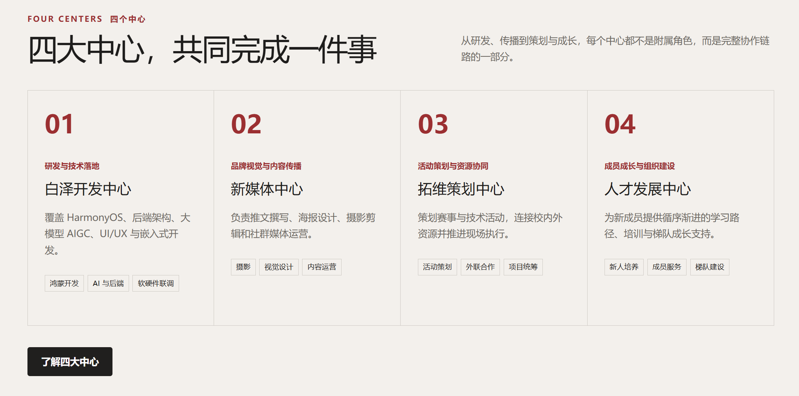
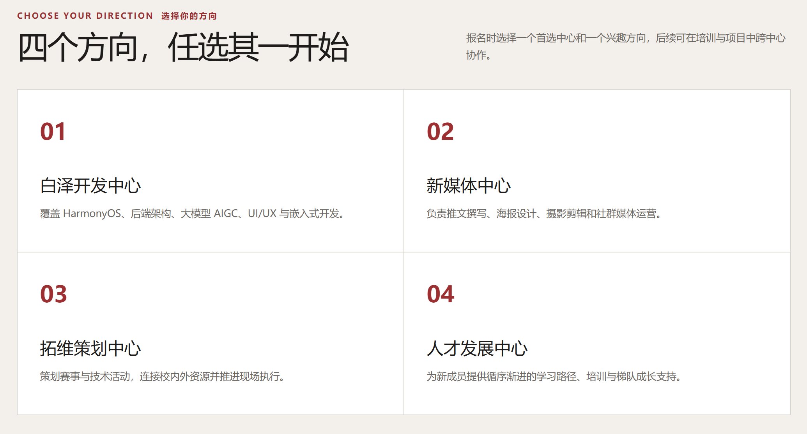
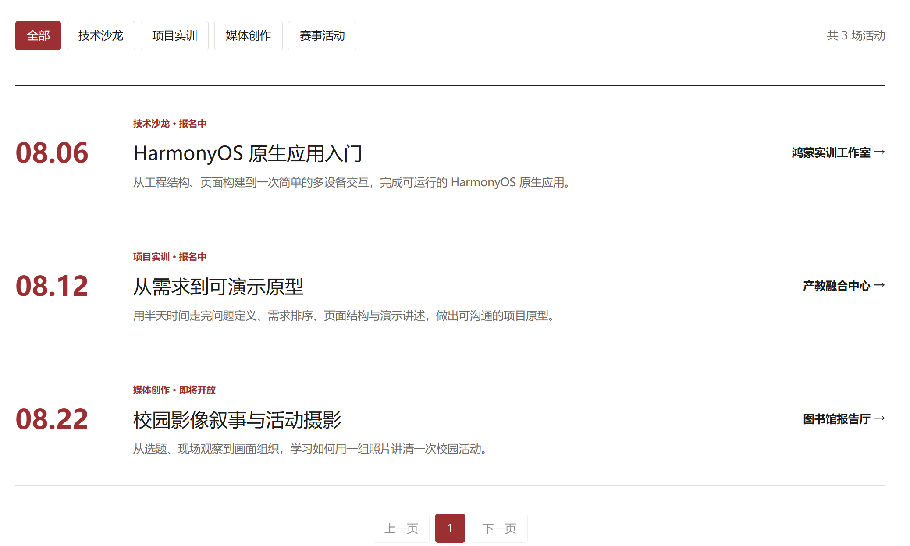

华为 HSD 联盟招新官网
Website · 响应式站点HTML / CSS / JS · 2025Vercel 部署
为校园 华为 HSD（Huawei Student Developers）联盟 打造的招新官方网站：用一屏说清"我们是谁、能学到什么、做过什么"，把招新宣传从群聊里的几张长图，变成一个可以转发、可以长期维护的正式站点。全站 响应式布局，手机、平板、桌面端均可正常浏览，并通过 Vercel 完成线上部署。
打开招新官网 ↗
01
页面概览
Page Overview
 首屏 · Hero / 招新主视觉
首屏 · Hero / 招新主视觉

中心介绍 · 联盟构成

方向介绍 · 技术方向

活动展示 · 招新动态
02
要解决的问题
Problem & Insight
社团招新最常见的情况是：信息全靠一张长图在群里转发，图片在手机上要放大才能看清，链接过期就彻底失效；新生想了解"联盟有哪些中心、分别学什么方向、往届做过什么活动"，往往要问学长才能得到零散答案。
这个站点把招新信息结构化：首屏 负责一眼建立认知与兴趣，中心介绍 讲清联盟构成，方向介绍 讲清每个方向学什么、做什么，活动展示 用往届实绩建立信任——新生不用问人也能自己把问题搞清楚，转发一个链接就完成全部传播。
03
页面结构与核心内容
Structure & Content
招新首屏主视觉 + 一句话定位 + 招新行动入口，第一屏完成"这是什么 / 为什么要加入"的表达
中心介绍梳理联盟下设各中心的定位与职责，让新生理解联盟的组织结构
方向介绍按技术方向拆分学习内容与产出方向，帮助新生判断自己适合哪个方向
活动展示集中呈现往届活动与成果，用真实内容建立信任，而不是空喊口号
响应式适配移动端优先的栅格与字体尺度，手机浏览无需缩放，转发到群里即点即看
线上部署通过 Vercel 完成部署与持续更新，链接长期可用，便于招新季反复传播
04
技术与实现
Stack & Implementation
前端HTML5 + CSS3 + JavaScript无框架依赖，加载迅速，便于长期维护与二次修改
布局Flexbox / Grid 响应式断点适配移动端、平板与桌面，内容模块随屏重排
视觉统一设计语言配色、字号与间距成体系，招新主视觉与内容层级保持一致
部署Vercel 静态托管推送即更新，招新期间可随时修正文案与内容
05
落地成果
Results
4大内容板块：首屏 / 中心 / 方向 / 活动
3端适配：手机 / 平板 / 桌面
1个链接替代长图转发，招新信息可长期复用
已上线完成线上部署，招新季对外使用
招新信息结构化把原本散落在长图与口述中的信息整理成可浏览、可检索的页面结构
传播效率提升一个链接即可完整传达联盟全貌，群聊转发与二维码传播均适用
移动端优先体验针对手机浏览优化排版与字号，新生在微信里点开即可顺畅阅读
可长期维护内容与结构解耦，后续招新只需替换文案与图片即可复用整套站点